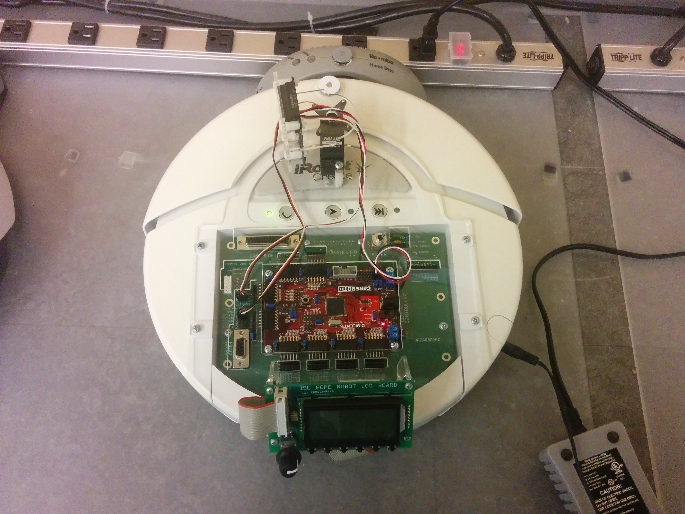
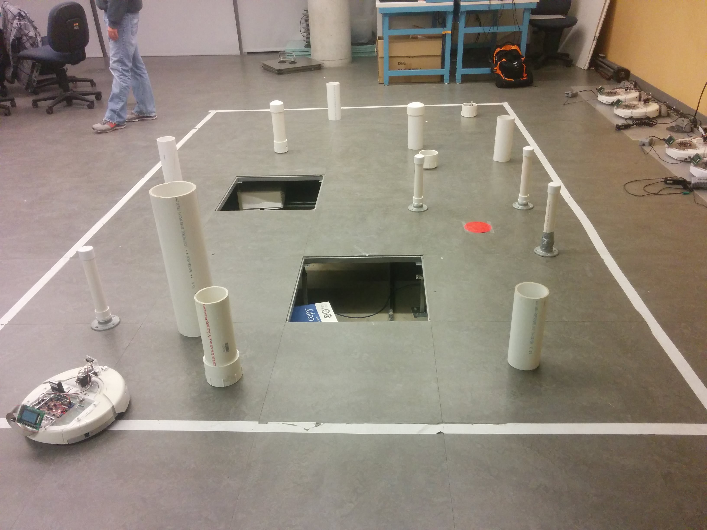

CPRE 288 - Final Project

Mars Rover
In this Embedded systems class, we programmed modified versions of the iRobot Create. We programmed its Atmega 128 controller to take advantage of the robot's sensors and motors.
The goal of the course was to master the sensor data from the robot and control its movements through a bluetooth connection to our computer.
For our final project, our robot was placed at random within an obstacle course. We were then supposed to find a specific location without running into any objects or holes. Additionally, we were not allowed to let the robot stray outside of the bounds of the course. During this time, we were not able to observe the robot itself and had to rely solely on the sensor data to guide it.
